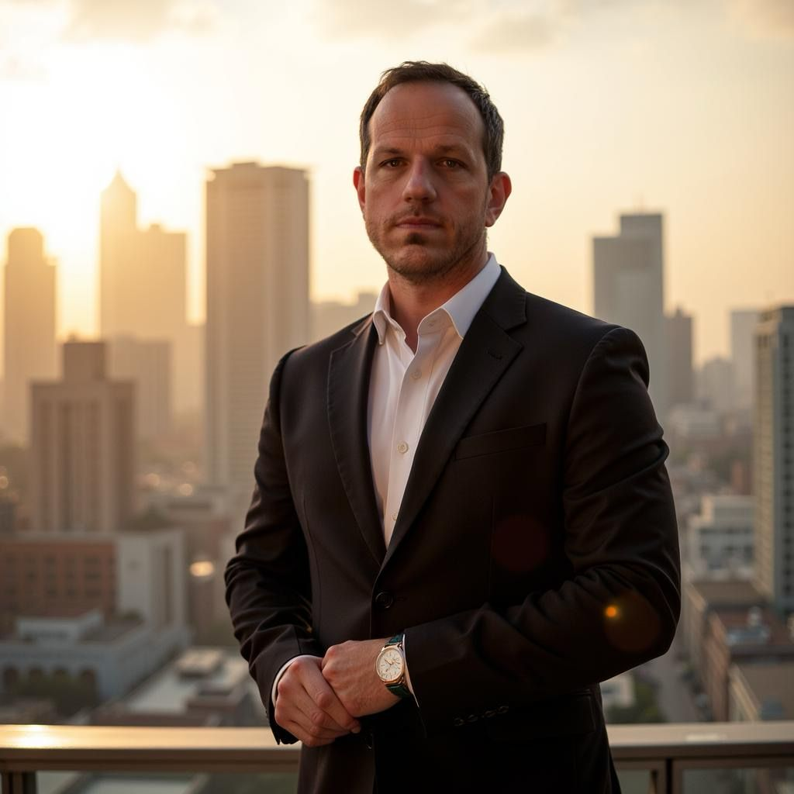

Executive Coaching
Accompagno executive e leader emergenti ad affinare il pensiero, rafforzare la propria presenza e navigare la complessità con sicurezza.

Lavoro all'intersezione tra politica economica, leadership e sviluppo umano. Come junior executive in una primaria istituzione di politica economica, comprendo in prima persona le pressioni, le ambiguità e le responsabilità che caratterizzano i ruoli ad alto impatto.
Sto completando un Master in Flex Executive Coaching presso la Luiss Business School di Roma — uno dei programmi di management più prestigiosi d'Italia — e sto lavorando attivamente al conseguimento della certificazione ICF (International Coaching Federation).
La mia pratica di coaching è fondata su metodologie evidence-based e arricchita dall'esperienza diretta all'interno di organizzazioni complesse. Lavoro con leader che vogliono pensare con maggiore chiarezza, comunicare con più efficacia e guidare in modo più autentico.
Ogni percorso di coaching è costruito su ascolto profondo, rigore intellettuale e rispetto incondizionato per l'autonomia del cliente.
Creo uno spazio in cui puoi pensare ad alta voce, senza giudizio. Le vere intuizioni nascono quando ci si sente davvero ascoltati.
Attraverso domande precise e potenti ti aiuto a esaminare le convinzioni e i punti ciechi che possono limitare la tua leadership.
Identifichiamo ciò che già funziona e lo amplifichiamo — anziché correggere le debolezze, valorizziamo il tuo vantaggio unico.
L'intuizione senza azione è incompleta. Ogni sessione si chiude con impegni concreti che sei tu a definire.
Nell'ambito del mio percorso di certificazione ICF, offro un numero limitato di percorsi di coaching gratuiti — ciascuno composto da 6 a 7 sessioni di un'ora — a professionisti motivati che desiderano sperimentare il coaching esecutivo strutturato senza alcun costo.
Le sessioni si svolgono online via videochiamata, programmate in base alle tue disponibilità. I posti sono limitati — accetto solo un piccolo gruppo alla volta per garantire la qualità.
Candidati per un Posto GratuitoSe sei curioso del coaching o vuoi candidarti per uno dei posti gratuiti, scrivimi. Rispondo personalmente a ogni messaggio.
Tutte le richieste sono strettamente riservate.